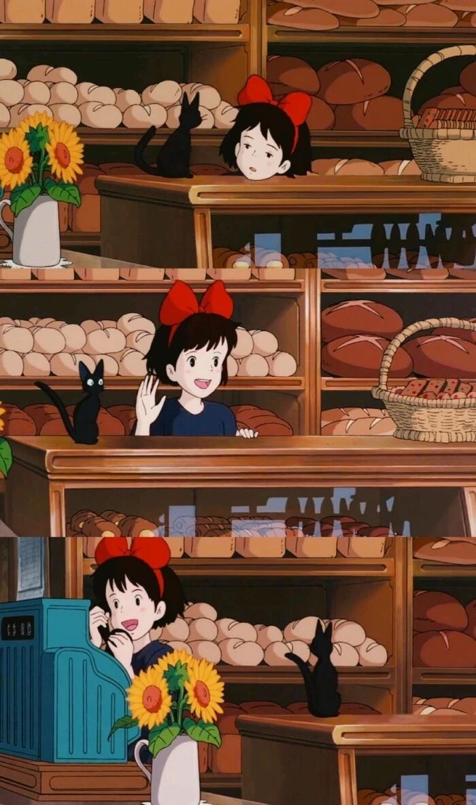

我理想中的生活，大概也不过如此
和 我 一 起 治 愈 生 活

图：@网络
文：@秋秋
大家好，我是秋秋。
又又见面啦～话说我最近很高产，其实是有很多内容还没与你们分享，而中间恰饭阻隔了点步伐，所以我就多多出现了（我真良心哈哈）。
说起来，大家对我的第一印象应该还是学习分享、手帐干货等，但是其实除了这些，我也很想把我的日常分享给大家，希望大家喜欢的是我的全部。
所以这一期，就让我们一起走进秋秋的生活（虽然你们可能并不好奇，不，你们好奇），看看关于我的一切🐰

1.关于理想
写下这个题目我会觉得很大，但其实想想小时候经常会写这样的命题作文。
我的理想，细心的朋友应该也知道了，就是能够成为一个学习博主，对别人有所帮助、带给大家温暖并养活自己。
相信很多人看到这里会问，为什么想当学习博主？你现在做到什么程度了？你打算怎么做呢？
Q1:为什么想当学习博主？
其实，这个种子很小就埋下了。我从小最喜欢、并且最擅长的事就是做笔记。是那种做个作业能安静半天的人。而且也喜欢学习各种技能，沉浸在一个人做手帐、读书、剪辑这类活动中。

*最喜欢的地方是我的书桌
最重要的，我也喜欢分享，所以每学会一个新技能或看了新的书再分享出去，这么想想最适合的就是当学习博主了～
Q2:你现在做到什么程度了？
我现在，其实才刚刚开始不到2个月。因为中间有很长的一段时间都在自我怀疑中。所以我很鼓励大家积极尝试～现在的话我靠博主的收益，大概够我在北京一个月房租（但是我相信会越来越好吧）。
Q3:你打算怎么做呢？
因为现在还在上班，白天都是以工作为主，所以晚上8点-11点就是我固定学习和输出时间，周六的话我会一整天写脚本拍视频，周天和朋友出去玩或者来家吃饭。所以时间管理每天都是满满当当🙈

*在家请朋友来吃饭
我打算目前是以公众号和抖音为主，等这两个平台稳定输出之后再去尝试其他平台（比如小红书、B站等）。
2.关于生活
对于生活，我一直的态度就是：既然来人间走一遭，一定要活的痛痛快快才回去～
所以我是一个很渴望冒险和变化的人。
大学的时候去了云南、广西、泰国、武汉...来北京之后更是每个周末都要出去玩。

即使工作忙，也会邀请朋友来家吃饭，感觉和上面说的安安静静爱学习的样子不太像，但是很矛盾这都是我。
我对于生活的要求不是很高，常常会想能够做自己喜欢的事情够吃饭就好，只要爱的人在身边，每晚能睡的踏踏实实，就很好了。
现在的话，我觉得一切都是往好的地方前进，我有喜欢的工作，同事非常nice，周末可以自己写稿拍视频，男朋友和我在一起也迎来第8年.......
3.关于未来
未来的话，我希望能够攒钱在我喜欢的城市买一套只属于自己的房子。
可以是海边，可以靠近花店.....

当然，这个愿望在我大学的时候就已经非常强烈了，但是当时大家（我父母）都把我当成小屁孩一样看待，现在我工作了有收入了，才知道努力几年，完全可以实现。
这里不得不要说一下我的婚恋观：其实我对婚礼、有车有房都没什么概念，只要我喜欢这个人就可以。
最重要的是在一起要有一辈子的想法，然后我还是更喜欢自己有车有房的感觉，而不是依靠别人。

我只希望对方是一个：干干净净，有有自己想法，礼貌、踏实能养活自己的人就可以。
所以未来的话，我会多去看看一些城市，也会给自己 gap year 一年，就是这一年不上班，多去经历和体验。
我觉得我们这一代人都和以前很不一样，首先并没有那么恋家或者落叶归根的概念🍂，其次我觉得选城市就像和选大学、选男朋友一样，不去看看体验一下，怎么能轻易就定居。
这样的话，大概在我25岁左右的时候，我希望能开始或完成我3个愿望。
学习博主、gap year、喜欢的城市定居。
当然，我其实以前一直是个很焦虑的人，就是每一步都把自己逼的很紧，比如毕业就要月入过万，开始做一件事就一定要有成绩。
但现在的话，我只想努力做到这些，但同时也会兼顾每一天。
最后，我希望我这辈子，都是一个简简单单、快快乐乐的人。
能做喜欢做的事，能有相守一生的人。
我也希望大家能够见证我慢慢前行的过程，get到更多勇气和热情。
不管以后是否还会打开我的视频，看看我的文章，都能够开心、热情的度过每一天。
当然，大家还有什么问题都可以评论区问我（有时候太忙可能微信没回复也这里说一声抱歉，望理解）。当然，这只是一个开始，以后关于我的生活、感悟，会一直与大家分享的～
希望我们都能，偷 得 浮 生 半 日 闲 。